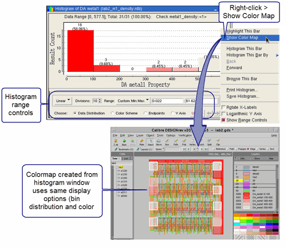

Histograms and
colormaps are useful ways to view the distribution of property values
for DRC results. Histograms can only be created for numeric properties.
Colormaps can be created for properties with numeric, string, or
mixed numeric and string values.
Prerequisites
A
DRC results database with properties attached to the results or
calculated properties turned on in Calibre RVE for DRC. See “Viewing Properties in Calibre RVE for DRC”.
For
colormaps, the layout should be open in an attached layout viewer.
Procedure
- If desired, select the Histograms
& Colormaps category on the Options tab and make selections
for the bin distribution and display properties of the histogram
or colormap. These settings are used when you create the histogram
or colormap in Step 3.
- Select the cell or check name
in the tree view that you want to create a histogram or colormap
for. Use Shift- and Ctrl- click
to select multiple cells or rule checks.
Only the results that belong
to the selected cells or checks are shown in the histogram or colormap.
- Create the histogram or colormap
with one of the following methods:
View
> Histogram or View
> Colormap, then select the property.
Right-click in the tree
view and select Histogram or Colormap, then select the property.
Use the Histogram and Colormap Toolbar.
The Histogram Window opens
or the colormap is created in the attached layout viewer.
Note: Select “Histogram (Flat)” to generate a histogram based
on the flat count results. To generate a flat count, use a batch
DRC run with the SVRF statement DRC CELL NAME YES.
- (Optional) If you created
a histogram, you can right-click in the histogram window and select
“Show Range Controls” to open controls for the bin distribution
and color scheme. Click the Update button
to refresh the histogram view after changing the display options.
Several other options are
available in the right-click menu. See “Histogram Window” for
details.
Results
Figure 1 shows a histogram in which a custom
bin distribution is used. In addition, the “Redscale” color scheme
has been selected (click Color Scheme in the range controls). When you
right-click in the histogram and select Show Color Map, the colormap
uses the same display options as the histogram. The histogram and
colormap show the “DA metal1” property for a Density check.
Figure 1. Histogram and Colormap